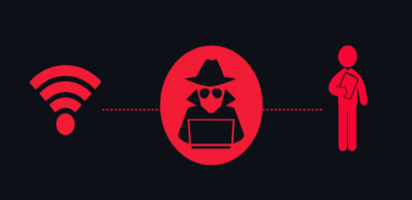
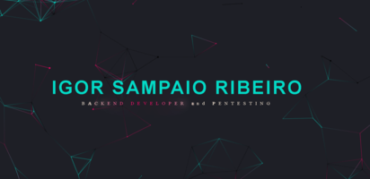
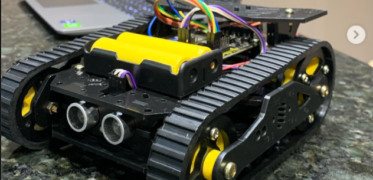

SYS.INFO / MINAS GERAIS, BR
Igor Ribeiro[ CORROSIVO ]
Cybersecurity.
Curiosidade ofensiva.
Ethical Hacking / Offensive Security / Red Team.
Explorando sistemas. Conectando conhecimento.
IDENTITYIGOR RIBEIRO
FOCUSRED TEAM
ENVIRONMENTLINUX / CODE
02 / ABOUT.ME
Por trás do terminal.
Minas Gerais, Brasil
Sou Igor Ribeiro, também conhecido como Corrosivo. Meu foco está em Cybersecurity, Ethical Hacking, Offensive Security e Red Team. Tenho formação em pós-graduação e interesse em entender como sistemas funcionam, onde falham e como protegê-los.
Desenvolvimento, infraestrutura de TI, Segurança da Informação e LGPD fazem parte do meu universo de estudo e prática.
- CODE
- Python / C# / Node.js
- DATA
- PostgreSQL / Firebird / Microsoft Access
pgAdmin / DBeaver - ENV
- Docker / Kali Linux / Arch Linux / VS Code
03 / EXPERIENCE.LOG
Trajetória.
- Cybersecurity
- Black & Decker
- Potenza - Correios
- DuBrasil Soluções
- DuBrasil Soluções
- MegaData
Foco em Cybersecurity e Red Team
Ethical Hacking / Offensive Security
Para conversar sobre tecnologia e segurança, entre em contato pelo e-mail igorsampaio10@outlook.com.
Estagiário em Logística
2015 - 2017Gerenciamento de redes de distribuições.
Minha introdução ao mercado de trabalho se deu na empresa Black & Decker, onde ingressei como estagiário por intermédio da FETI - Fundação de Ensino Técnico Intensivo. Durante esse período, desempenhei o papel de auxiliar administrativo na área de logística. Na Black & Decker, tive a valiosa oportunidade de não apenas aplicar os conhecimentos teóricos adquiridos no curso Técnico Administrativo, mas também de aprimorar minhas habilidades práticas. Trabalhar em uma área tão dinâmica como a logística me proporcionou uma visão holística do funcionamento interno de uma grande empresa, além de desenvolver minha capacidade de lidar com desafios e buscar soluções eficientes para questões do cotidiano corporativo.
Auxiliar Operacional
2018 - 2019CDD - Correios
Desempenhei o cargo de auxiliar operacional na empresa Potenza, atuando no Centro de Distribuição Domiciliária (CDD) dos Correios, por meio de uma parceria terceirizada, de forma contratual. Nesse ambiente dinâmico e desafiador, fui exposto a um contexto operacional intenso, lidando diretamente com a logística de distribuição. Minha atuação consistia em contribuir para a eficiência do processo de distribuição de encomendas, onde aprendi a importância da organização meticulosa e da gestão ágil para garantir o correto fluxo de materiais. Essa experiência me permitiu desenvolver habilidades de resolução de problemas em tempo real e aprimorar minha capacidade de trabalhar sob pressão, enquanto aprendia sobre a logística operacional em um dos setores fundamentais para a cadeia de entrega de serviços.
Analista de Suporte Técnico I – II
2019 - 2021Suporte Secullum
Na empresa DuBrasil Soluções, atuei no setor de software Secullum, desempenhando a função de suporte técnico e implantador externo. Minha responsabilidade era oferecer suporte direto aos usuários, garantindo o pleno funcionamento e a eficácia dos softwares Secullum. Além disso, como implantador externo, liderei a implementação dessas soluções em diferentes ambientes, colaborando diretamente com os clientes para garantir uma transição suave e eficiente para as novas tecnologias.Nessa posição, desenvolvi habilidades sólidas de comunicação, resolução de problemas e gerenciamento de tempo, ao trabalhar em um ambiente onde a excelência no atendimento ao cliente e a precisão na implementação eram fundamentais para o sucesso dos projetos.
Analista de Sistemas Computacionais II
2021 - 2021TGA Sistemas
Na mesma empresa, tive a oportunidade enriquecedora de migrar para o setor TGA, um sistema ERP, onde desempenhei o papel de suporte interno. Minha principal responsabilidade era identificar e solucionar bugs e erros dentro do sistema, garantindo seu pleno funcionamento e confiabilidade. Além disso, forneci suporte direto aos usuários, respondendo a consultas, oferecendo orientações e instruções detalhadas para maximizar a utilização eficaz do sistema. Trabalhar nesse ambiente me permitiu aprofundar meu conhecimento sobre o funcionamento interno de um sistema ERP e aprimorar minha capacidade de solucionar problemas de forma eficiente e proativa.
Suporte Call Center
2023 - 2024Web Services
Atuei na equipe de Webservices do WebISS na MEGADATA, desempenhando o papel de Suporte Call Center. Minha rotina envolvia a gestão e aprimoramento dos Webservices do WebISS, trabalhando diretamente na manutenção, desenvolvimento e aperfeiçoamento dessa parte essencial do sistema. Minhas responsabilidades incluíam a análise detalhada dos requisitos, a implementação de melhorias e a garantia da integridade, segurança e eficiência dos serviços web oferecidos.
04 / PROJECT.LOG
Código em prática.
Estudos de segurança, desenvolvimento e experimentação. Do conceito ao código.
C2_CLIENT ←→ SERVER
HarpiaC2 / Command and Control
Prova de conceito educacional de Command and Control em Python. Comunicação cliente-servidor via sockets, múltiplas conexões e criptografia AES com troca de chaves Diffie-Hellman.
Python / socket / cryptographyPoC documentada · atualização: 04 jun. 2025

Wireless-Attacks-Docs-Red-Team
Este repositório contém estudos, ferramentas e soluções para desafios relacionados à segurança de redes sem fio. Ele foi projetado para ajudar profissionais e entusiastas de segurança a explorar ataques e defesas de redes sem fio em um contexto Red Team.
Segurança wireless / DocumentaçãoEstudos publicados · atualização: 02 abr. 2025

Portfólio
Projeto front-end desenvolvido durante a faculdade, com foco em estudos de HTML, CSS e JavaScript. Foi meu primeiro contato com criação de páginas web responsivas, explorando princípios básicos de design e usabilidade.
HTML / CSS / JavaScriptSite publicado no GitHub Pages · Demonstração ↗

AutoBot
Projeto do portfólio originalCarro robótico programado em Python, equipado com sensores de proximidade, controle via celular (Wi-Fi), e capacidade autônoma de seguir faixas. Projeto criado com foco em automação e IoT, aplicando conceitos de lógica, eletrônica básica e redes.
Tecnologias usadas no projeto: Python, Raspberry.Ready To Play
Projeto do portfólio originalAplicativo mobile desenvolvido em Dart/Flutter para facilitar a reserva de quadras esportivas, piscinas e espaços recreativos. O sistema possui funcionalidades como controle financeiro, criação de torneios e gestão de horários. Projeto apresentado como Trabalho de Conclusão de Curso (TCC).
Tecnologias usadas no projeto: Dart, Flutter.Xadrez 2D (Game Dev com Unity)
Projeto do portfólio originalJogo de xadrez 2D desenvolvido em Unity com C#, voltado para fins acadêmicos e aprendizado de desenvolvimento de jogos. O projeto inclui regras básicas do jogo e interface amigável para duas pessoas.
Tecnologias usadas no projeto: C#, Unity.